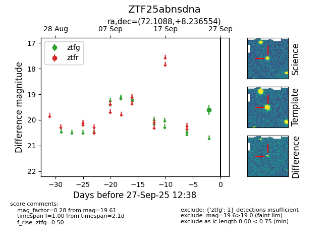

FINK: ZTF25abnsdna
Lasair: ZTF25abnsdna
ALeRCE: ZTF25abnsdna
ZTF25abnsdna (ztf,fink)
equatorial (ra, dec) = (72.1088,+8.23655)
galactic (l, b) = (190.0914,-22.64591)

last ztfg=19.61
1 ztfg detections